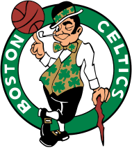

The Boston Celtics are widely known throughout the USA becuase of their achivements
The Boston Celtics were founded on June 6, 1946 they hold the record for the most NBA championships with 18 titles with one of them being from 2024
The Celtics also have a record of 8 consecutive championships from 1959-1966 which is an insane record and something very hard to achive in the NBA today
the Celtics also have a history of having legendary players such as Bill Russel, Bob Cousy, John Havlicek, Larry Bird, and Paul Peirce throughout their franchse history
The Celtics have also had a wide succes with their coaches in their franchise history with coaches such as Red Auerbach,Tom Heinsohn, KC Jones, Bill Russel, Doc rivers, Brad Stevens, and Joe Mazzulla
The Celtics also hold the record for most hall of famers in the entire NBA with an outstanding 50 hall of famers